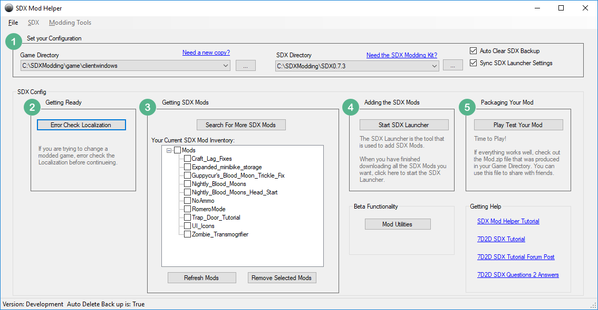

We will be using the 7D2D SDX Mod Helper to download the game for us. We'll want the client, and the dedicated version, so we can add our mods to both.

Click on "Need a new copy?" button to open the Game Downloader
Change the Download Path to point to the new MyMod folder, and enter in your Steam username. After that, select "Windows Client" and "Windows Dedicated", and click on the "Download Checked Items"
Depending on your Internet speed, it may take a little while to download.
When you download the client, it'll ask for your Steam Password, and possibly, your Steam Guard code.
Note: For Windows Dedicated and Linux Dedicated build, the Game Downloader will use the "anonymous" user, and thus no password needed.
Created with the Personal Edition of HelpNDoc: Free help authoring tool